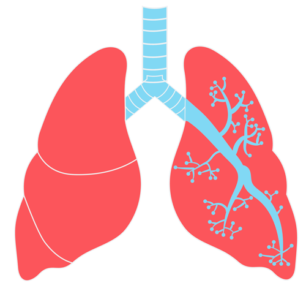

<link href="https://unpkg.com/tailwindcss@^2/dist/tailwind.min.css" rel="stylesheet">
<link rel="stylesheet" href="https://cdnjs.cloudflare.com/ajax/libs/animate.css/4.1.1/animate.min.css"/>

<meta name="viewport" content="width=device-width, initial-scale=1.0">

<header class="bg-gray-800 text-gray-100 overflow-x-hidden">
<nav class="pt-10">
    <ul class="flex justify-between text-xl pt-8 py-8 px-8 sm:px-48">
      <li>
        <a href="index.html" class = "font-semibold text-yellow-400 text-xl">🏠 Home</a>
      </li>
      <li>
        <a href="subjects.html" class = "font-semibold text-xl text-yellow-400">Subjects 📚</a>
      </li>
    </ul>
  </nav>

</header>


<section class="justify-center bg-gray-800 text-gray-100 overflow-x-hidden">

      <div class="flex flex-col items-center leading-7 text-center text-gray-900">
        <h3 class="box-border text-xl leading-tight tracking-tight text-white sm:text-2xl text-5xl py-6">Covid-19</h3>
    </div>
    
    <div class="grid lg:grid-cols-3 flex flex-wrap justify-center content-center content-around mx-10 content-between overflow-x-hidden">

        <div class="rounded-lg shadow-xl relative mx-10 my-24 px-8 pt-16 pb-16 bg-red-100 text-white" style="max-width:400px;">
        <div class="">
            
        </div>

            <h3 class="text-3xl font-semibold text-black leading-tight">Spike Proteins</h3> <br>
            <h2 class = "text-black">The bulbous projections seen on the outside of the coronavirus are spike proteins, which act as grappling hooks that allow the virus to latch onto host cells and crack them open for infection.</h2><br><br>
            <a href="3dModels/Covid19-virus.usdz" class="py-3 px-6 rounded shadow hover:shadow-lg text-white text-lg bg-gray-900 hover:bg-black focus:outline-none transition-all duration-300 ease-in-out">Bring to Life</a>
        </div>

        <div class="rounded-lg shadow-xl overflow-hidden relative mx-10 my-24 px-8 pt-16 pb-16 bg-red-100 text-white" style="max-width:400px;">
            <div class="">
                
            </div>
    
                <h3 class="text-3xl font-semibold text-black leading-tight">Healthy Lungs</h3> <br>
                <h2 class = "text-black">Healthy lungs look and feel like sponges. They're pink, squishy, and flexible enough to squeeze and expand with each breath.</h2><br><br>
                <a href="https://console.echoar.xyz/query?key=white-rain-2508&file=d0023664-cd08-492c-8df5-6c045a612fa7.usdz"class="py-3 px-6 rounded shadow hover:shadow-lg text-white text-lg bg-gray-900 hover:bg-black focus:outline-none transition-all duration-300 ease-in-out">Bring to Life</a>
            </div>

            <!-- Card -->
            <div class="rounded-lg shadow-xl overflow-hidden relative mx-10 my-24 px-8 pt-16 pb-16 bg-red-100 text-white" style="max-width:400px;">
                <div class="">
                  
                </div>
        
                    <h3 class="text-3xl font-semibold text-black leading-tight">Lungs with Covid</h3> <br>
                    <h2 class = "text-black">The new coronavirus can infect the upper or lower part of your respiratory tract. The lining can become irritated and inflamed, and a radiograph may reveal spotty white patches.</h2><br><br>
                    <a href="https://console.echoar.xyz/query?key=white-rain-2508&file=d6f05635-29d3-4b50-8988-39746c14be83.usdz" class="py-3 px-6 rounded shadow hover:shadow-lg text-white text-lg bg-gray-900 hover:bg-black focus:outline-none transition-all duration-300 ease-in-out">Bring to Life</a>
                </div>
                <!--End of Card-->
    </div>
</section>

